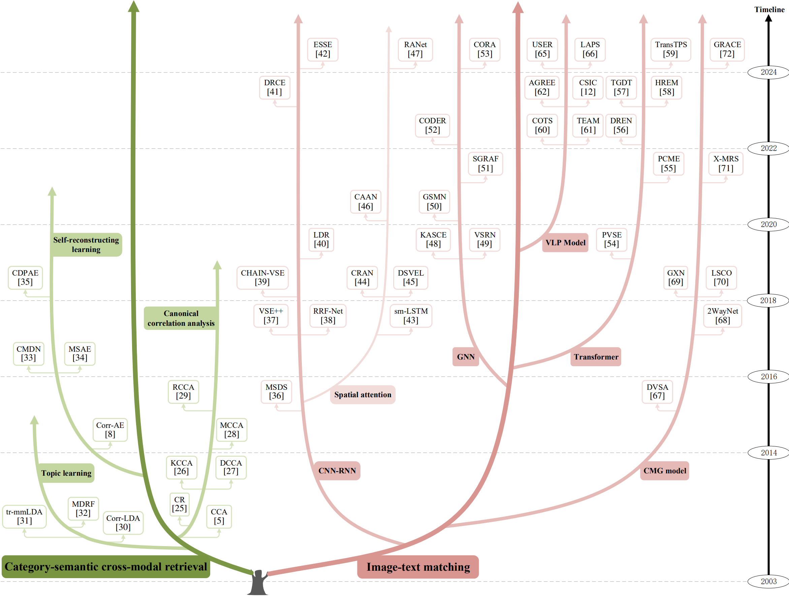
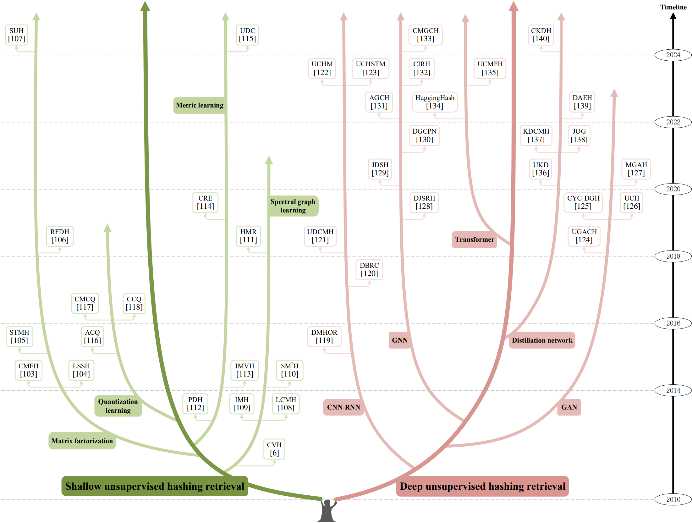

Abstract
With the exponential surge in diverse multi-modal data, traditional uni-modal retrieval methods struggle to meet the needs of users seeking access to data across various modalities. To address this, cross-modal retrieval has emerged, enabling interaction across modalities, facilitating semantic matching, and leveraging complementarity and consistency between different modal data. Although prior literature has reviewed the field of cross-modal retrieval, it suffers from numerous deficiencies in terms of timeliness, taxonomy, and comprehensiveness. This paper conducts a comprehensive review of cross-modal retrieval's evolution, spanning from shallow statistical analysis techniques to vision-language pre-training models. Commencing with a comprehensive taxonomy grounded in machine learning paradigms, mechanisms, and models, the paper delves deeply into the principles and architectures underpinning existing cross-modal retrieval methods. Furthermore, it offers an overview of widely-used benchmarks, metrics, and performances. Lastly, the paper probes the prospects and challenges that confront contemporary cross-modal retrieval, while engaging in a discourse on potential directions for further progress in the field.

Illustration of cross-modal retrieval.
1 Multi-modal data
1.1 The heterogeneous gap of multi-modal data
Cross-modal retrieval stands as a pivotal domain within multi-media retrieval, poised with immense potential in the realm of artificial intelligence. Its purpose is to glean semantically pertinent information from disparate modalities, leveraging given modal cues like text, image, or video. Nonetheless, the landscape of cross-modal retrieval is rugged, the paramount among which is gauging content affinity amidst heterogeneous modal data—a conundrum often dubbed the heterogeneous modality gap.
Diagram of heterogeneous modality gap.
1.2 The distinct challenges across heterogeneous modalities
As cross-modal retrieval has advanced, it now extends beyond traditional text-image retrieval to encompass a broader array of data modalities and retrieval tasks. This section offers a comprehensive review of cross-modal retrieval methods that involve modalities beyond text-image, including text-video, text-audio, image-audio, image3D, and more. We explore the unique challenges associated with these extended modalities, offering insights into the specific techniques and architectures designed to handle the complexities of each combination.
Diagram of distinct challenges across heterogeneous modalities.
2 Text-image cross-modal retrieval
Current cross-modal retrieval methods are categorized into five overarching categories: unsupervised real-value retrieval, supervised real-value retrieval, unsupervised hashing retrieval, supervised hashing retrieval, and cross-modal retrieval under special scenarios. Each of these overarching categories is subdivided based on specific technical architectures or scenarios:

A compilation of representative text-image cross-modal retrieval methods. Below, CCA stands for canonical correlation analysis, CNN-RNN stands for convolutional neural network and recurrent neural network, GAN stands for generative adversarial network, GNN stands for graph neural network, and VLP model stands for vision-language pre-training model.
2.1 Unsupervised real-value retrieval
The evolutionary tree of representative unsupervised real-value retrieval methods.
2.2 Supervised real-value retrieval

The evolutionary tree of representative supervised real-value retrieval methods.
2.3 Unsupervised hashing retrieval
The evolutionary tree of representative unsupervised hashing retrieval methods.
2.4 Supervised hashing retrieval

The evolutionary tree of representative supervised hashing retrieval methods.
2.5 Cross-modal retrieval under special scenarios

A compilation of representative methods for cross-modal retrieval under special scenarios.
3 Cross-modal retrieval beyond text-image

A compilation of representative cross-modal retrieval methods beyond text-image retrieval.
5 Conclusion
Cross-modal retrieval addresses the growing need for accessing and utilizing diverse multi-modal data. The evolution of research in this field has improved the accuracy, stability, and scalability of retrieval systems. The paper presents a comprehensive taxonomy, reviews numerous papers, and provides insights into cross-modal retrieval methods and architectures. It also offers guidance on dataset selection and performance evaluation metrics. The paper explores opportunities, challenges, and future research directions, contributing to the understanding and development of cross-modal retrieval. Further exploration and innovation in this field are encouraged.
BibTeX
@article{li2023cross,
title={Cross-modal retrieval: a systematic review of methods and future directions},
author={Li, Fengling and Zhu, Lei and Wang, Tianshi and Li, Jingjing and Zhang, Zheng and Shen, Heng Tao},
journal={arXiv preprint arXiv:2308.14263},
year={2023}
}